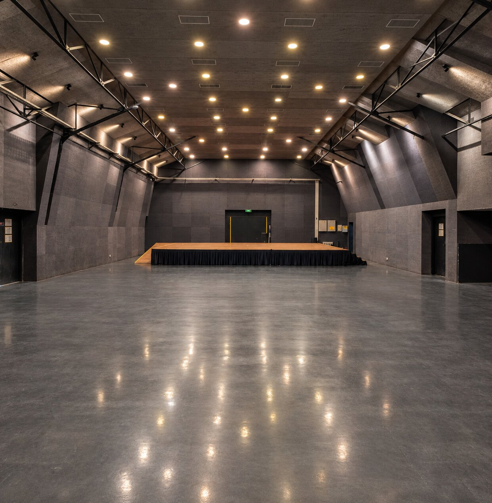
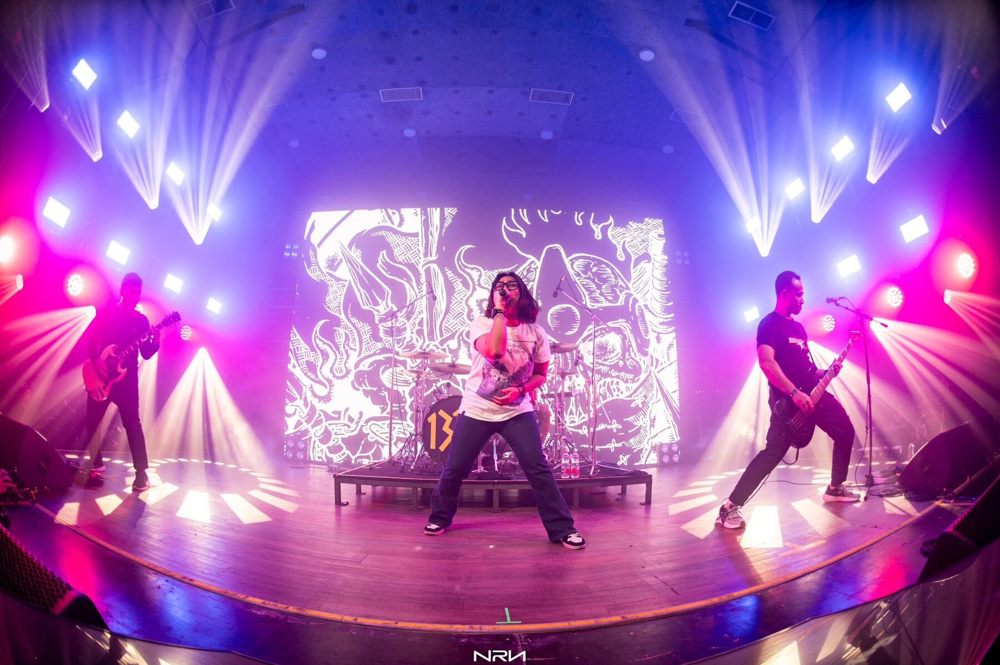
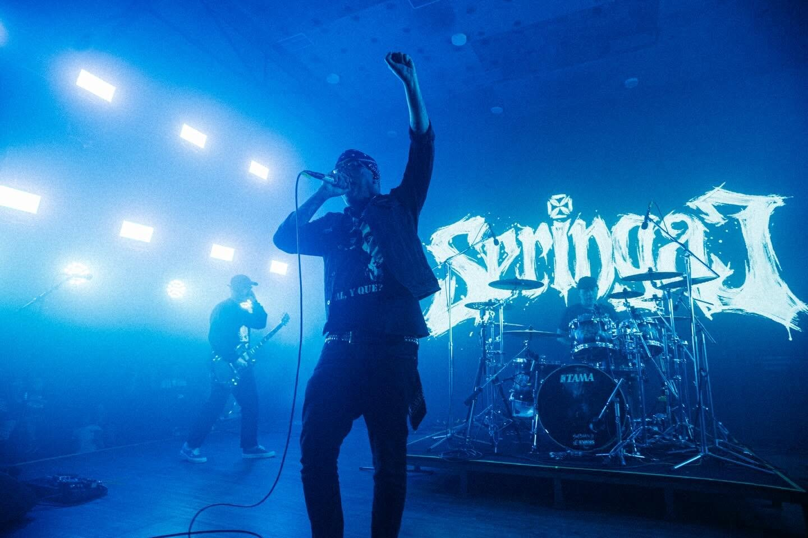
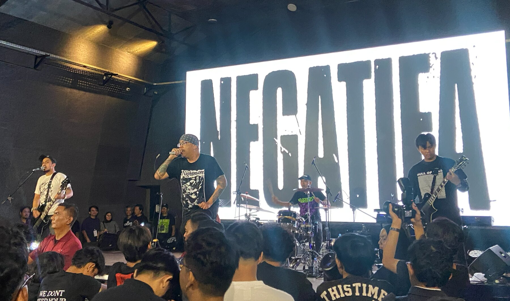
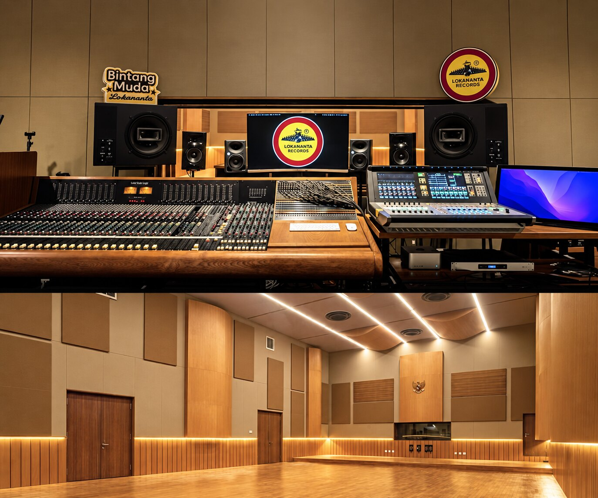
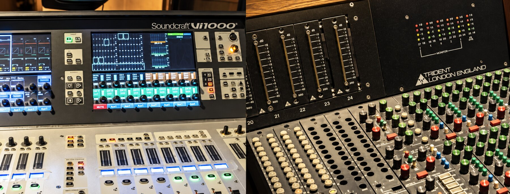
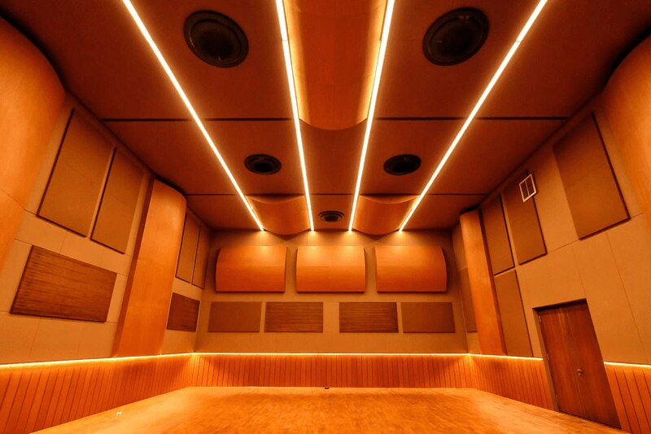
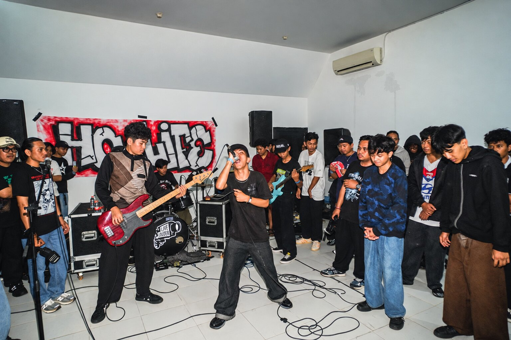
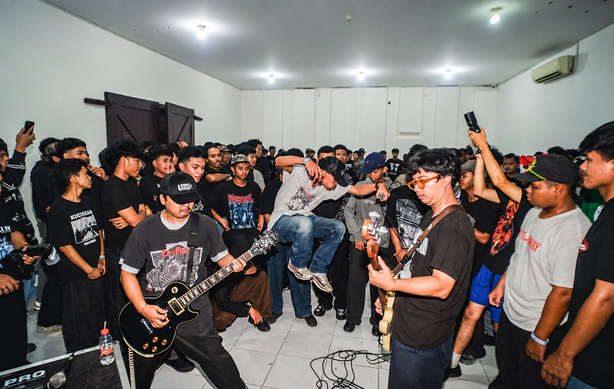

Rooms built
for sound.
From an intimate live house in Jakarta to Indonesia’s historic recording complex in Surakarta, we connect artists, promoters, brands, and communities with spaces made for meaningful work.
M Bloc Live House, Studio Lokananta, and Aula Timur now operate within the IDN Bloc ecosystem following the integration of the M Bloc network.
The right room can turn
an idea into impact.
M Bloc
Live House
A 434 m² indoor venue inside a repurposed warehouse at M Bloc Space, built for concerts, showcases, launches, talks, screenings, and community-led programmes—with an adjoining outdoor area of approximately 300 m².




Profile
Conceived and initiated by Wenzrawk as an accessible, professionally equipped home for artists, M Bloc Live House has hosted a broad spectrum of Indonesian and international acts, including Seringai, Hindia, The SIGIT, Stars and Rabbit, Zeke and the Popo, Reality Club, Vacations, Isaac Gracie, Freedom Call, Nerd Connection, SPEED, Haywire 617, and Iman’s League.
Today, the venue operates as a business unit within IDN Bloc.
Capacity & specifications
Venue hire
Standard use: 15 hours, 07:00–22:00. Load-in: 03:00–06:00. Load-out: 00:00–03:00. Additional time is charged at 50% of the applicable venue rate.
Production, permits and security, royalties or licensing, F&B, furniture or tents, and security deposit are not included.
Book M Bloc Live House ↗Studio
Lokananta
Established in 1956, Lokananta is Indonesia’s historic recording institution. Its revitalised studio combines cultural significance with a large live room and professional facilities for recording, live sessions, podcasts, dubbing, choir recording, mixing, and mastering.



Legacy & present
Across generations, Lokananta has been connected with artists including Gesang, Waldjinah, Titiek Puspa, Bing Slamet, Sam Saimun, and Buby Chen. Its contemporary recording story includes Glenn Fredly and The Bakuucakar’s Live at Lokananta, Pandai Besi’s Daur Baur, and work by White Shoes & The Couples Company.
Studio Lokananta now operates within IDN Bloc as part of the wider Lokananta cultural destination.
Selected specifications
- Live room: 16 × 11 metres
- 7,000-watt electrical capacity
- Trident S80B 20-channel console
- Soundcraft Vi1000 digital mixing console, up to 60 channels
- Multitrack recording and monitor systems
- Professional Neumann and AKG microphones
Services
- Music recording
- Live-session recording
- Podcast recording
- Dubbing and voice recording
- Choir recording
- Mixing and mastering
Aula Timur
Lokananta
An intimate indoor room for concerts, showcases, film screenings, talks, workshops, and community programmes—designed for close-range encounters between artists and audiences.


Profile
With a maximum capacity of 100 pax, Aula Timur offers a close-range, flexible setting for emerging artists, touring collectives, cultural conversations, and experimental formats. Selected programmes have featured acts such as Teenage Mosh Need Training, Kid Monster, and Tenholes.
The venue operates within Lokananta and the IDN Bloc ecosystem.
Best suited for
- Intimate concerts and showcases
- Community and collective events
- Talks, workshops, and discussions
- Film screenings and presentations
- Brand and cultural programmes
Booking
Tell the venue team about your preferred date, programme format, expected attendance, production needs, and event timeline.
Book Aula Timur ↗Venue availability, rates, technical inventory, inclusions, and operating terms are subject to confirmation by the respective venue team.